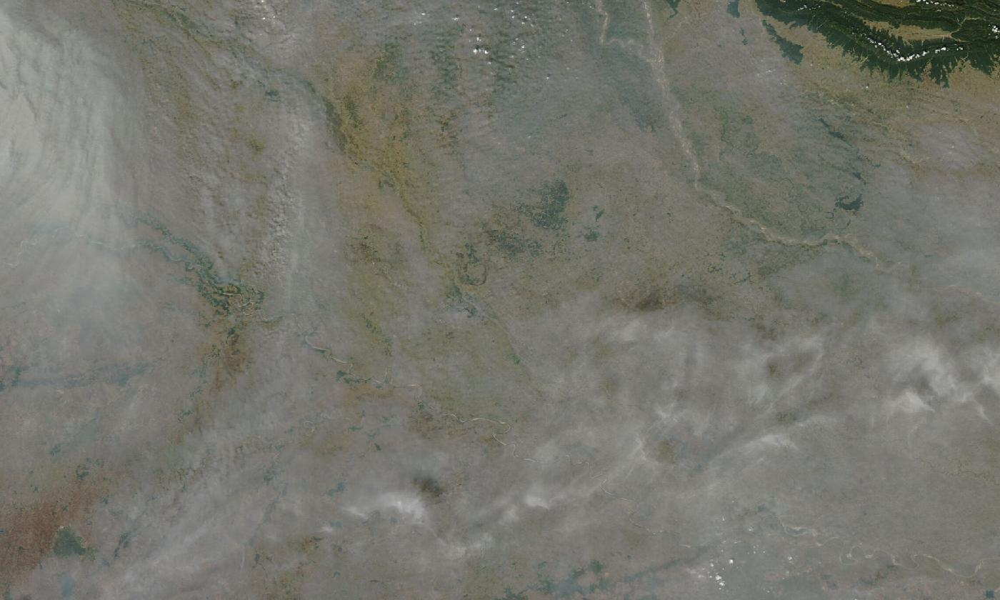
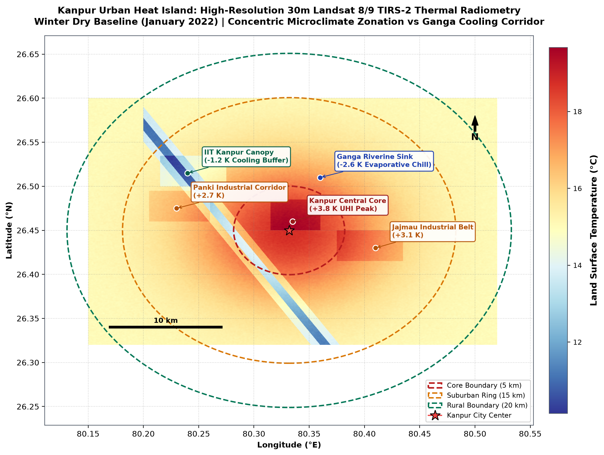
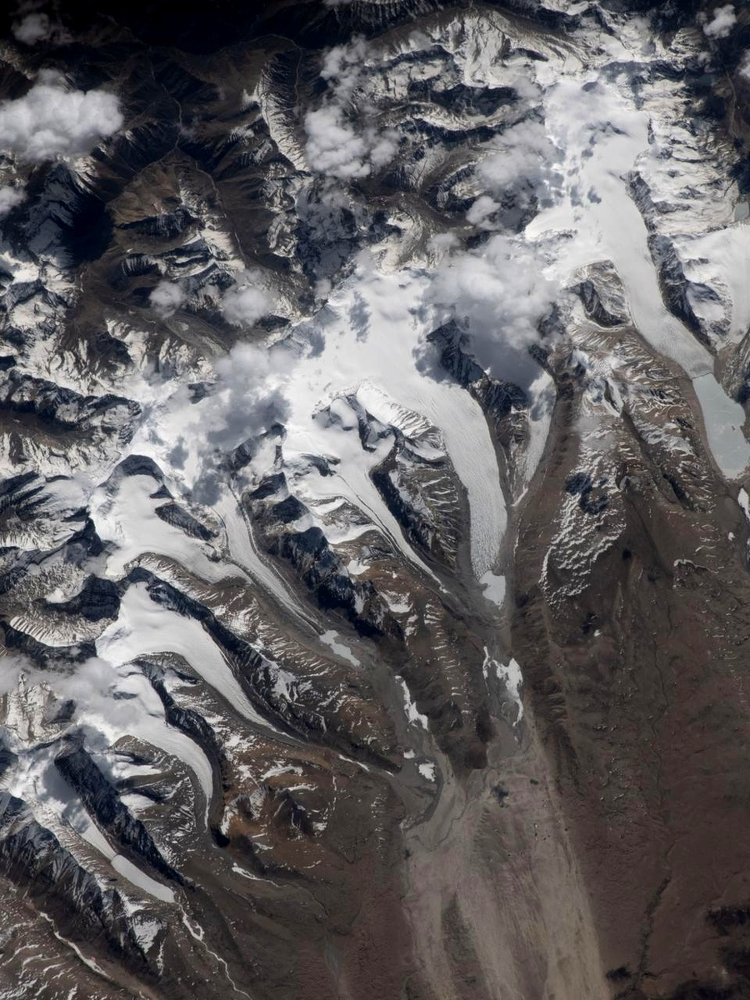
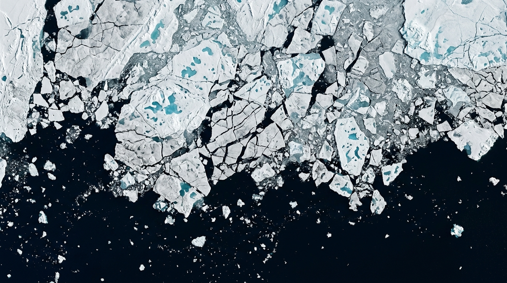
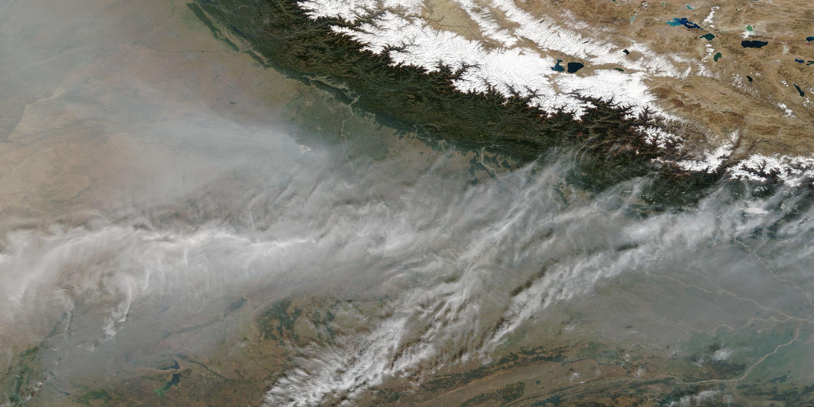
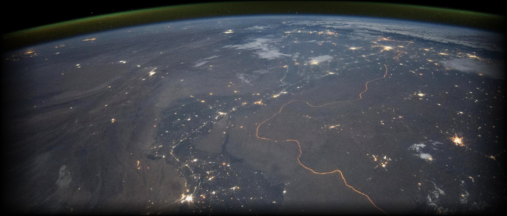

Reading the signals of a changing Earth.
Signal Earth explores environmental dynamics across extreme planetary terrains through satellite radiometry, continuous regulatory telemetry audits, and reproducible scientific analysis with zero sponsored bias.
Our Four Investigations
Quantitative evaluations into atmospheric particulate dynamics, high-resolution thermal infrared zoning, and statutory NAQI formulations.

NASA Aqua MODIS · 250mKanpur Particulates & Winter Multipliers
Read investigation →
USGS Landsat 8/9 TIRS-2 · 30mIntra-Urban 30 m Landsat Thermal Zoning
Read investigation →
ISS Night Radiance · MegacityDelhi NAQI Criteria Pollutant Dominance
Read investigation →Atmospheric Inversion Dynamics
Read investigation →Planetary Observation Stations (Keyboard Access)
Keyboard-navigable index of all 14 active planetary observation regions.
| Station | Issue | Coordinates | Action |
|---|
The State of the Planet
Curated primary findings from institutional climate evaluations, global greenhouse budgets, and statutory air quality rankings.
1.5°C Threshold Tracker
2025 global surface air temp was +1.47°C above pre-industrial; the 3-year running mean crossed +1.52°C.
CCPI 2026 Country Rankings
Ranks 1–3 remain vacant; Denmark ranks 4th, while Russia, USA, and Saudi Arabia occupy the lowest positions.
Global Carbon Budget
Fossil CO₂ emissions reached 38.1 GtCO₂; remaining 1.5°C quota sits at ~170 GtCO₂ (approx. 4 years).
UNEP Emissions Gap Report
Current policies project 2.8°C of warming by 2100; a 42% emissions reduction is required by 2030.
World Air Quality Report
Pakistan and Bangladesh rank most polluted globally; India ranks 6th with 48.9 µg/m³ PM2.5 (9.8× WHO limit).
4th Global Coral Bleaching Event
Satellite SST records mass thermal stress across over 73% of global coral reef areas.
Latest Research & Papers Feed
Curated papers across Arctic amplification, boundary layer thermodynamics, urban heat islands, and remote sensing methods.
The Arctic has warmed nearly four times faster than the globe since 1979
Observational evidence confirms four-fold polar amplification driven by sea ice-albedo feedbacks, far exceeding CMIP6 model projections.
DOI: 10.1038/s43247-022-00498-3 → Earth System Science Data · 2023Global Carbon Budget: Fossil Emissions and Land-Use Sinks
Global fossil fuel emissions reached unprecedented rates with less than 170 GtCO₂ remaining to stay below 1.5°C of warming.
DOI: 10.5194/essd-15-5301-2023 → Nature · 2024Critical transitions and compounding stressors in the Amazon forest
By 2050, 10% to 47% of the Amazon forest will be exposed to compounding disturbances, risking an ecosystem tipping point.
DOI: 10.1038/s41586-023-06970-0 → Atmospheric Chemistry and Physics · 2012Aerosol optical properties & forcing over the Indo-Gangetic Basin
Shallow winter boundary layers trap ground aerosol loadings, causing surface radiative cooling alongside lower tropospheric heating.
DOI: 10.5194/acp-12-1403-2012 → The Lancet Planetary Health · 2021Health and economic impact of air pollution across India
Ambient particulate pollution accounted for 1.67 million deaths in India, with Uttar Pradesh and the Gangetic plain facing the highest burden.
DOI: 10.1016/S2542-5196(20)30298-9 → Quarterly Journal of the Royal Met Soc · 1982The energetic basis of the urban heat island and radiometry
Foundational formulation establishing how impervious urban geometry, canyon aspect ratio, and thermal inertia create localized urban heat deltas.
DOI: 10.1002/qj.49710845502 →Spaceborne Earth Observation Archive
Continuous visual transect across planetary latitudes: from polar cryosphere fracture margins to regional aerosol stagnation and intra-urban thermal radiometry.

Arctic Sea Ice Fracture
Fracturing sea ice sheets and summer melt margin dynamics over polar waters.

Ganga Basin Smoke Plume
Post-harvest agricultural burning smoke spreading across the northern plains.
Atmospheric Stagnation & Haze
Dense winter aerosol entrapment beneath suppressed meteorological inversions.
30m Surface Thermal Radiometry
High-resolution infrared zoning exposing urban heat microclimates and industrial hotspots.
Delhi Nocturnal Urban Footprint
Spaceborne night radiance capturing the spatial morphology of the National Capital Region.

Himalayan Topographic Containment
The southern Himalayan mountain front physically trapping winter aerosols within the plains.
Evidence before opinion.
Environmental change deserves more than headlines. Signal Earth operates on three uncompromising scientific standards:
Traceable Sources
Every data point traces directly to public spaceborne archives (NASA MODIS, USGS Landsat, ESA Sentinel) or official regulatory CAAQMS telemetry. Zero synthetic infilling or black-box tampering.
Transparent Methods
All statistical formulations, statutory CPCB NAQI breakpoint formulas, thermal radiance calibrations, and station operational hiatuses are explicitly documented and published.
Reproducible Analysis
All quantitative findings are accompanied by documented Python, SciPy, and Jupyter analysis notebooks hosted openly on GitHub for independent scientific verification.
The 855-Day Regulatory Hiatus: When monitoring stations fail, many dashboards synthetically interpolate missing values. Signal Earth explicitly discloses Kanpur's 855-day regulatory station interruption, preserving genuine data gaps as empirical truth.
Open Code & Calibrated Data Ledgers
Download our continuous multi-year numbers ledger in CSV format or execute our Python/SciPy processing workflows directly against NASA and USGS archives.
import numpy as np, rasterio
# Landsat 8/9 Band 10 TOA radiance to Brightness Temp
L_lambda = ML * DN + AL
BT = K2 / np.log((K1 / L_lambda) + 1.0)
LST_celsius = BT - 273.15
print(f"Urban delta: {np.nanmean(LST_celsius):.2f}°C")
Get the Monthly Signal
A monthly brief analyzing one planetary signal, one satellite radiometry anomaly, and open reproducible code. Zero tracking cookies.
Report a Data Discrepancy
Spot an anomaly in our statutory NAQI calculations or Landsat Band 10 calibrations? Submit an empirical correction.